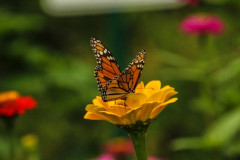
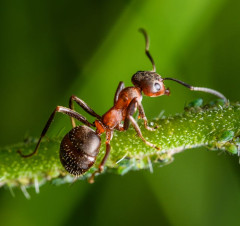
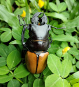
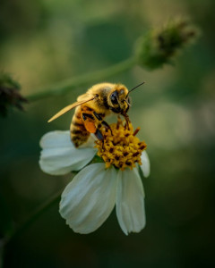

Borboleta-monarca (Danaus plexippus)

A borboleta-monarca é famosa por realizar uma das migrações mais impressionantes do reino animal, viajando milhares de quilômetros entre países ao longo das estações. Durante sua vida, passa por uma transformação completa chamada metamorfose, saindo de ovo até se tornar uma borboleta com asas laranjas e pretas bem marcantes. Uma curiosidade interessante é que ela se alimenta de plantas tóxicas quando ainda é lagarta, o que a torna venenosa para predadores.
Formiga-cortadeira (Atta)

As formigas-cortadeiras são conhecidas pela sua organização e trabalho em equipe. Elas cortam pedaços de folhas, mas não para comer diretamente — usam esse material para cultivar fungos, que são sua verdadeira fonte de alimento. Vivem em colônias extremamente organizadas, com divisão de tarefas entre operárias, soldados e a rainha. Uma curiosidade é que elas conseguem carregar folhas muitas vezes maiores do que o próprio corpo.
Besouro-hércules (Dynastes hercules)

O besouro-hércules é um dos insetos mais fortes do mundo, capaz de levantar objetos que pesam várias vezes o seu próprio peso. Os machos possuem grandes “chifres”, usados em disputas por território ou por fêmeas. Além disso, sua coloração pode variar dependendo da umidade do ambiente, o que o torna ainda mais interessante. É um inseto grande e impressionante, bastante usado como destaque em estudos e curiosidades.
Abelha (Apis mellifera)

As abelhas são essenciais para o equilíbrio do meio ambiente, pois realizam a polinização de diversas plantas, ajudando na produção de alimentos. Vivem em colmeias organizadas, onde cada indivíduo tem uma função específica, como a rainha, operárias e zangões. Uma curiosidade interessante é que elas se comunicam por meio de uma espécie de “dança”, indicando a localização de flores com néctar. Apesar da fama de perigosas, só atacam quando se sentem ameaçadas.